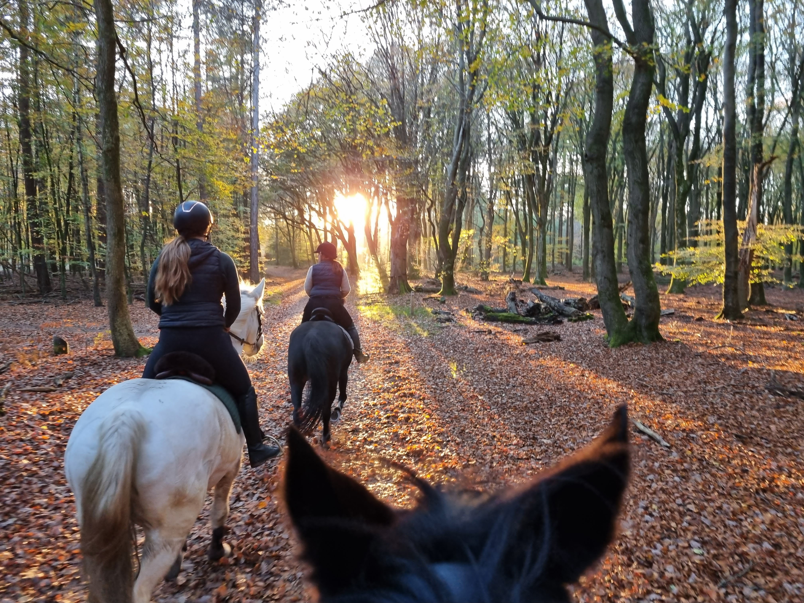

Welcome to my world of hobbies! Here's a glimpse into the things I love to do in my free time.
Horse riding is not just a hobby; it's a passion that brings me immense
joy and fulfillment. As a lease rider/caretaker, I have the privilege of
riding a horse owned by a friend, and there's nothing quite like the bond
between horse and rider. Whether it's a leisurely trail ride through the
countryside or training to improve our condition in the arena, horse
riding allows me to connect with nature and experience a sense of freedom
like no other. I'm fortunate to be able to participate in various
activities with the horse, including preparing for events like the Eperse
Vierdaagse. In June, we will embark on four days of long tracks on the
Veluwe, an experience I'm eagerly looking forward to.I not only love to
ride, but also enjoy caring for horses, groundwork, and simply being
around them.

One of my favorite pastimes is getting lost in the pages of a good book, especially in the enchanting world of fantasy. From epic adventures to magical realms, fantasy books ignite my imagination and transport me to places beyond the confines of reality. Curling up with a book and immersing myself in a captivating story is pure bliss for me. I enjoy sharing my love for books with others and often engage in discussions about them on social media platforms. Some of my favorite fantasy books include "The Lord of the Rings" series by J.R.R. Tolkien, "Harry Potter" series by J.K. Rowling, and the "Throne of Glass" series by Sarah J. Maas.
When I'm not exploring imaginary worlds through books, you'll often find me diving into virtual realms through gaming. I have a soft spot for simulation games like The Sims, where I can unleash my creativity and build dream homes, design characters, and live out endless possibilities. Additionally, I enjoy exploring breathtaking landscapes and engaging in thrilling battles in games like Horizon Zero Dawn. I also find myself drawn to immersive RPGs like The Witcher and eagerly anticipate the release of games like Hogwarts Legacy, where I can embark on epic adventures and immerse myself in rich, fantastical worlds.
There's nothing quite like the simple pleasure of taking long walks,
especially when accompanied by my dachshund Polly. Living on the Veluwe,
where the forest is exceptionally beautiful, enhances the experience.
Whether it's strolling through scenic parks or wandering along peaceful
trails amidst the captivating landscape, these walks allow me to unwind,
clear my mind, and fully immerse myself in the beauty of nature. Plus,
spending quality time with my furry companion makes every walk even more
special.